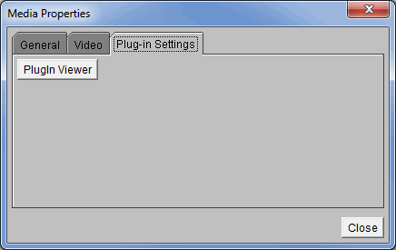

Overview
McIDAS-V can display QuickTime movies. The user can pause, single step and play a movie. This option can be found in the Main Display window under the View->Capture->Movie menu.

Image 1: Movie Display Window
Properties
 Play - Starts the QuickTime movie.
Play - Starts the QuickTime movie.- Pause - Pauses the QuickTime movie.
 Step Backward - Moves backwards a single step in the movie.
Step Backward - Moves backwards a single step in the movie. Step
Forward - Moves forwards a single step in the movie.
Step
Forward - Moves forwards a single step in the movie. Media
Properties - Opens the QuickTime media properties. Right-click to change
the rate of the movie.
Media
Properties - Opens the QuickTime media properties. Right-click to change
the rate of the movie.
The media properties is composed of three tabs, General, Video, and Plug-in Settings.
The General tab has general information about the QuickTime movie:

Image 2: General Tab of the Media Properties Window
Properties
- Media Location - Defines the location of the movie file on your computer.
- Content Type - Defines the content type of your movie file.
- Duration - Displays the length of the movie.
- Position - Displays how far you are into the movie.
- Bit Rate - Defines the number of bits that are conveyed or processed per unit time.
- Frame Rate - Defines the speed at which the movie is playing.
The Video tab lists the specific video information:

Image 3: Video Tab of the Media Properties Window
Properties
- Track # - Defines the order of videos when multiple videos have been added.
- Encoding - Defines the image type of the frames in the movie.
- Size - Defines the size of the frames in terms of pixels.
- Frame Rate - Defines the speed at which the movie is playing.
The Plug-in Settings tab has access to the PlugIn Viewer details:

Image 4: Plug-in Settings Tab of the Media Properties Dialog
Image 4: Plug-in Settings Tab of the Media Properties Dialog
Properties
- PlugIn Viewer - Opens a PlugIn Viewer window, where you can choose a Parser for QuickTime file format, or a JPEG Renderer.
Menus
All of the menu items seen utilizing the movie display are standard options that can be found in the Menus section of the Layer Controls page.